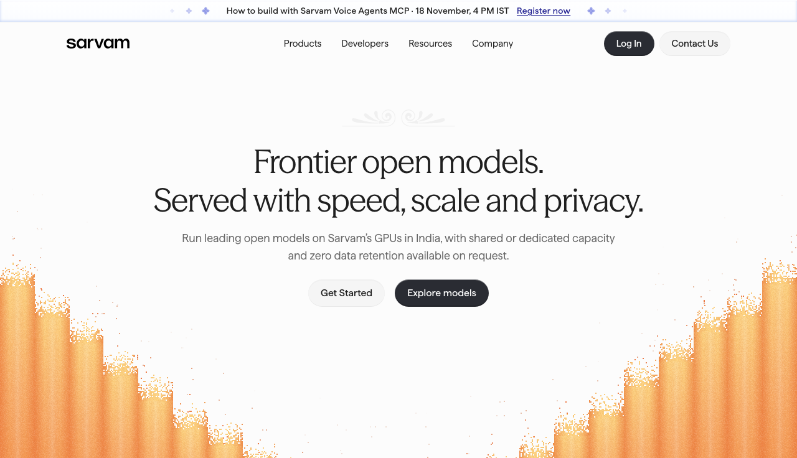
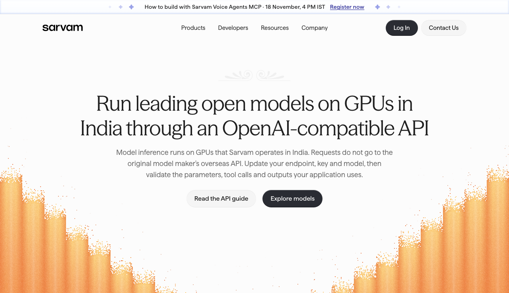

| Part | Baseline | Variant |
|---|---|---|
| H1 | Frontier open models. Served with speed, scale and privacy. | Run leading open models on GPUs in India through an OpenAI-compatible API |
| Sub-line | Run leading open models on Sarvam’s GPUs in India, with shared or dedicated capacity and zero data retention available on request. | Model inference runs on GPUs that Sarvam operates in India. Requests do not go to the original model maker's overseas API. Update your endpoint, key and model, then validate the parameters, tool calls and outputs your application uses. |
| Button | Get Started | Read the API guide (goes to: docs) |